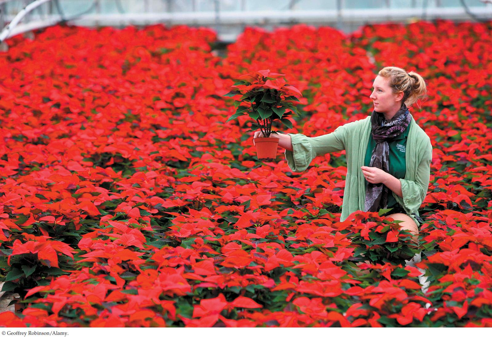

| 27 | Reproduction of Flowering Plants |
|

The poinsettia is a popular Christmas flower. But the red “flowers” are not flowers at all; instead, they are leaves (bracts). The flowers are yellow structures in the center of a group of red leaves and are not visible in this photograph.
|
Dairy farmer Albert Ecke was fascinated by the red and green shrubs that grew all over southern California and were used by Mexican-Americans for red dye. The shrub, Euphorbia pulcherrima, got the name “poinsettia” from the man who first brought it to the United States: the first U.S. ambassador to Mexico, Joel Roberts Poinsett. In the early 1900s, Ecke started selling the plants at his farm in Hollywood. But two challenges stood in the way of his making this plant a commercial success.
First, although poinsettias generally bloomed in the fall and early winter in the mild climate of southern California, when Ecke grew them in fields in Hollywood, the formation of flowers was unreliable. Biologists later found that the flowering of poinsettias required at least a 14-hour night for several weeks. Any interruption in the long night—by passing cars or street lamps, for example—inhibited flowering. So Ecke’s son Paul moved the growing operation south, to isolated fields far from Los Angeles. A second challenge was that the plants were tall and gangly. Although pretty, they were hard to transport and not attractive indoors. Paul Ecke found a variety of poinsettia that was much more compact. He propagated this variety and eventually developed it into the short potted plant that is so popular today. The Eckes decided that the time of flowering was just right for making the poinsettia a “Christmas flower,” so they promoted this now portable plant as a holiday decoration, blanketing live television shows with free plants between Thanksgiving and Christmas. The campaign was successful: more than 100 million poinsettias are now sold in the United States during the winter holidays every year, making it the nation’s best-selling potted plant.
Breeding more attractive flowering plants that are easier to grow is an ongoing part of floriculture, the industry involved with the production of floral crops. You may be surprised to learn that the brightly colored “flowers” of poinsettias are not flowers at all. The red parts of the plant that we most notice and appreciate are actually specialized leaves called bracts. The poinsettia has a single tiny yellow female flower, without petals, surrounded by male flowers.
How did an understanding of angiosperm reproduction allow floriculturists to develop a commercially successful poinsettia?